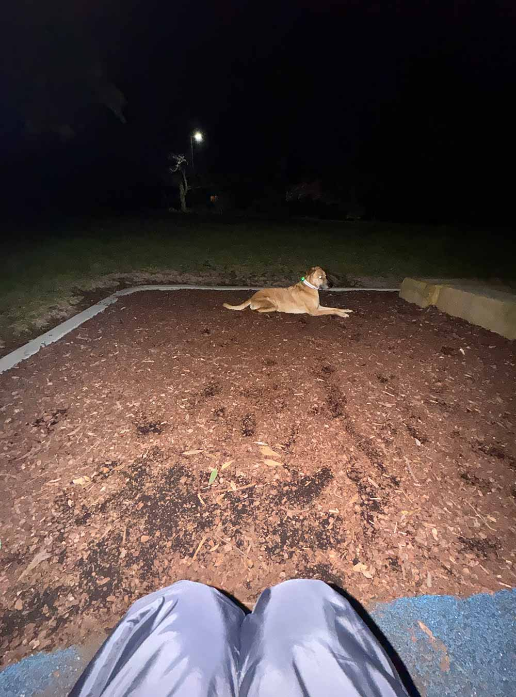

16 August. 11:00 PM. Woodhill Reserve, Castle Hill NSW. 6 C. Clear Skies. Stars Visible.
There’s a nature reserve near the house which serves as a short-cut in-between streets. Most of the time, I would always pass-by this place when walking Kirby or when I’m going to catch a bus going somewhere. The reserve is really small but enough for me to unleash Kirby and let him run around. There is a small playground and a bunch of benches at one side of it.
I like going here past 10 PM when there is no one outside anymore. It’s eerily quiet. I would expect Kirby to run around, but he rather sit beside me - to protect me being vulnerable. Sitting on a swing, in a late winter night, with Kirby right beside me. In these times I am reminded of the sheer loneliness in my life.
18 August. 12:27 AM. 7 Knight Pl Castle Hill. Clear Skies. 6 C.
I just finished 5-hours of work. I tried cooking a Spaghetti Bolognese for dinner, and I was honestly quite satisfied with it. Using red wine as a base was so good as opposed to whatever sweeteners they put in traditional Filipino-style spaghetti.
I wanted to go to sleep, but I find myself wanting to write again. Just outside the house is a balcony overlooking a forest of gum trees. It’s a similar setting to that reserve a few days ago, but a lot darker and quieter. I sat on the balcony with the laptop. It’s pitch black. I didn’t turn the lights on and bought Kirby with me outside. It’s six degrees Celsius here. My breathe lets out puffs of smoke whenever I exhale. It’s quite visible as I type things on my screen right now. I’m wearing two jackets and my fleece socks. Do you know the feeling you get for cuddle weather? It’s like this one except you’re all alone in a pitch black forest.
During these times is when I step back and reflect at things. Why I am alone right now, and the decisions I’ve made that lead me to where I am today.
Sitting here right now, or even sitting on that bench; I thought: who would’ve thought I would be here right now. Just three to four years ago, I was just expecting to still be in a hot, humid, and polluted place; not having a single clue where I should go in life. I was just expecting to still be in the same small shitty house in Manila, eating quite honestly, unhealthy food, and most probably be obese (as I’m noticing it with some friends as our metabolism slows down as we get older.)
Somehow, I find myself at a random suburban park in Sydney. In the middle of winter. With a dog who’s protecting me from what’s out there. What’s more, I find myself even more alone than I was back at home. Yes, I’ve made loads of amazing people whom I consider friends, but I guess the familiar comfort of having friends that understand you hits different. The third-world and western culture just don’t match-up. I find myself here in this balcony in the pitch black. Who would’ve thought I would be here? With all these comfort. Funny how life works.
It’s nights like these are the reason why I love Winter. I feel like I get to by myself, all alone, and not get pressured to be someone whom I’m not. I get to hide myself behind many layers of clothing, comfortable scarves, and warm beanie hats.
Yet, it’s so cold. It’s so lonely and sometimes you just feel helpless. You want warmth. In the cold lingers all my anxieties and uncertainties. You want to feel safe, to feel secure. You want someone here.
18 August. 12:52 AM. 7 Knight Pl Castle Hill. Inside.
I made my way back inside. Kirby hurriedly went inside and on his bed as if he can’t take the cold anymore.
It’s a bit warmer. I only have one light open: a amp which fills the room with a warm orange light. It’s more comfortable here than it is outside, yet, it’s still quiet.
Quiet.
Writing here feels like talking to the void.
Yet, somehow, I feel like someone is reading this - that I’m being seen, that I’m not alone after all.
Maybe that’s all the warmth I have left to cling to.
… or maybe that’s just what I want to believe.
I’m going to sleep.